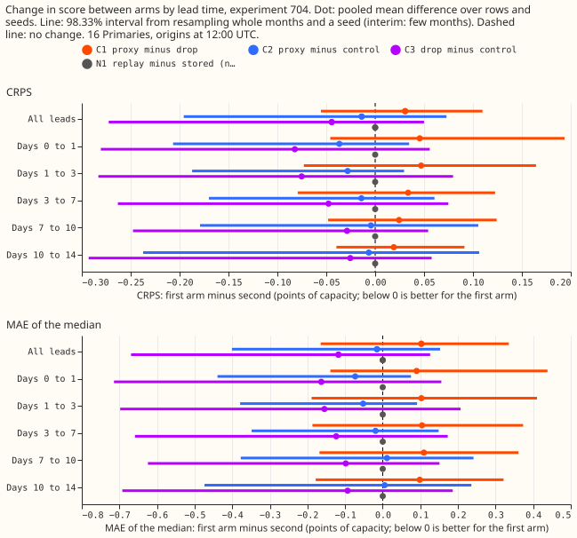
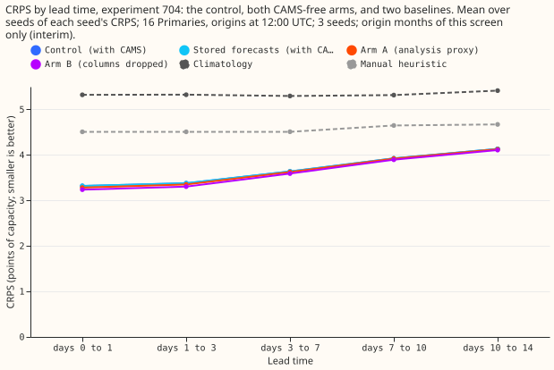
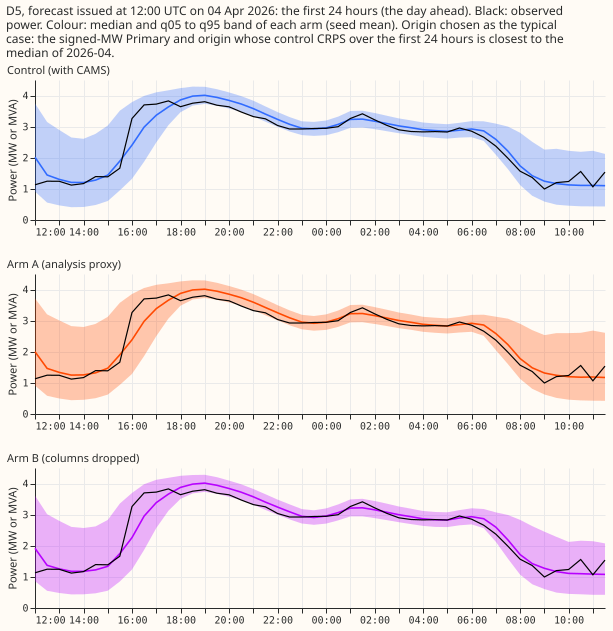
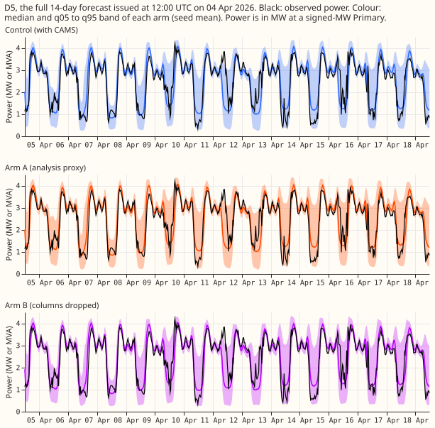
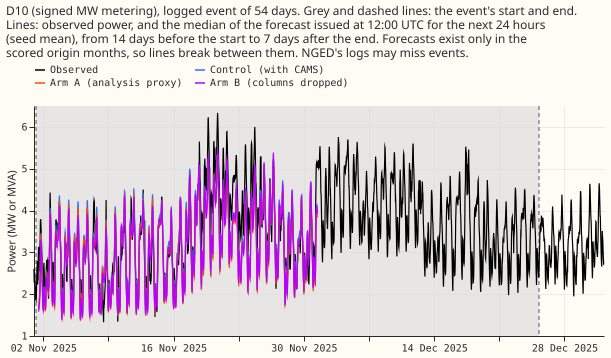
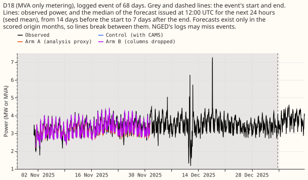
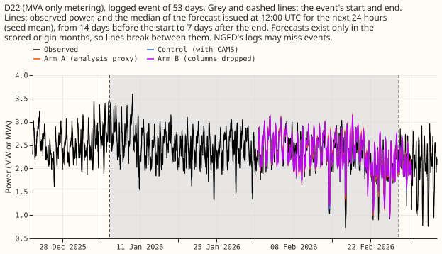
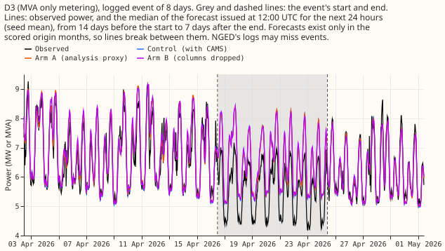
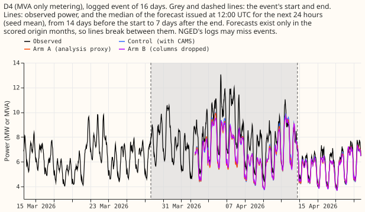
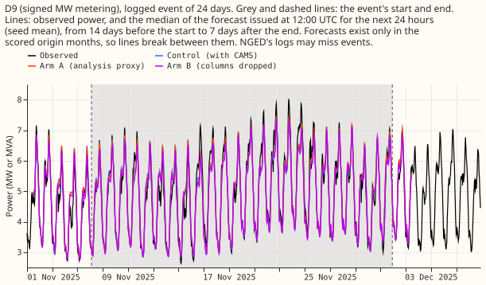

How much skill does the step-5 demand network for the Primaries lose when its two previous-day CAMS irradiance columns are not available at inference, and should they be replaced by the ENS analysis proxy or dropped?
We asked whether the first production demand forecast for the 16 Primaries (primary substations) gets worse when two inputs that production cannot supply are removed. The two inputs describe yesterday's sunshine, taken from the Copernicus Atmosphere Monitoring Service (CAMS) satellite-based irradiance product, which production will not read when it makes a forecast. We retrained the step-5 neural network three times on four test months: once unchanged (the control), once with yesterday's sunshine taken from the ensemble weather forecast of the European Centre for Medium-Range Weather Forecasts (ECMWF ENS) instead (arm A), and once with the two inputs set to zero (arm B). The forecast got no detectably worse without the two inputs, so production can drop them and needs no code for them.
Verdict: supported; arm B (the two columns dropped) is chosen by the pre-registered rule. Scores are the continuous ranked probability score (CRPS) and the mean absolute error (MAE) of the median, each as a percentage of the Primary's effective capacity ("points of capacity"). The decision contrast C1, arm A minus arm B in CRPS, is +0.031 points, with a 98.33% interval of −0.056 to +0.110 (interim: four months). To choose arm A, the rule needed an interval wholly below zero, a point estimate of at most −0.01, and every seed's C1 below zero in every month, so arm A does not advance to the other four months. C2 (arm A minus control) is −0.014 [−0.196, +0.073] and C3 (arm B minus control) is −0.045 [−0.272, +0.050]. The 98.33% interval of C3 allows a loss of at most 0.05 points, about 1.3% of the control's CRPS. The pooled MAE moves the same way as the pooled CRPS in every contrast (C1 +0.103, C2 −0.015, C3 −0.118).
Two of the four predictions failed (P2 and P4), and P1 held on the point estimates only.
- P1 (each arm changes CRPS by less than +0.03 against the control) held on the point estimates (−0.014 and −0.045), but not at the interval level: the upper bounds are +0.073 and +0.050.
- P2 (|C1| below 0.01 with an interval including zero) failed on the point estimate (+0.031); the interval did include zero, and the predicted outcome of the rule, arm B, held.
- P3 (MAE moves with CRPS) held for the pooled contrasts, and failed in some splits (see Checks).
- P4 (the replay reproduces the stored forecasts to within 1e-5 of capacity) failed, as below.
Results
Arm B has the lowest CRPS and MAE at every lead, by margins inside the seed noise. CRPS and normalised MAE of the median, points of capacity, mean over seeds of each seed's score, four months (interim); lower is better.
| Lead band | Control | Arm A (proxy) | Arm B (drop) | Climatology | Manual heuristic |
|---|---|---|---|---|---|
| CRPS, all leads | 3.769 | 3.755 | 3.724 | 5.338 | 4.582 |
| CRPS, days 0 to 1 | 3.319 | 3.283 | 3.237 | 5.320 | 4.508 |
| CRPS, days 1 to 3 | 3.379 | 3.351 | 3.304 | 5.324 | 4.508 |
| CRPS, days 3 to 7 | 3.638 | 3.624 | 3.590 | 5.295 | 4.510 |
| CRPS, days 7 to 10 | 3.924 | 3.920 | 3.896 | 5.316 | 4.648 |
| CRPS, days 10 to 14 | 4.133 | 4.127 | 4.108 | 5.413 | 4.670 |
| MAE, all leads | 6.792 | 6.777 | 6.675 | 9.779 | 8.160 |
| q05–q95 coverage (%) | 85.4 | 85.7 | 85.3 | 90.1 | 80.7 |
| q05–q95 band width | 26.30 | 26.56 | 26.28 | 40.03 | 28.09 |
The control is a refit of experiment 677's unchanged chain, not experiment 677's stored forecasts. The refit did not reproduce the stored forecasts to 1e-5 of capacity (prediction P4). The largest difference per month, as a fraction of capacity, was 8.1e-5 (2025-11), 1.1e-4 (2026-02), 5.0e-4 (2026-04), and 1.6e-5 (2026-06), because pre-training on the GPU is not bit-deterministic. As the plan pre-registered, the control was therefore refitted in all four months. N1, the refit's CRPS minus the stored forecasts' CRPS, is about 1e-6 points, far below every contrast.
The seeds disagree more than the arms do. The control's pooled CRPS is 3.828, 3.737, and 3.741 for seeds 0, 1, and 2. C1 per month and seed ranges from −0.084 to +0.133 points, and its sign changes between seeds in three of the four months (table below). C3 per month and seed ranges from −0.347 (2025-11, seed 0) to +0.066. Weighted by rows, the 2025-11 seed-0 cell gives about 70% of arm B's pooled gain over the control; the control had its worst seed score there.
C1 by month and seed, CRPS in points of capacity.
| Month | Seed 0 | Seed 1 | Seed 2 |
|---|---|---|---|
| 2025-11 | +0.088 | −0.029 | +0.133 |
| 2026-02 | +0.040 | +0.020 | −0.025 |
| 2026-04 | +0.023 | +0.097 | −0.084 |
| 2026-06 | +0.020 | +0.005 | +0.081 |
One Primary, D15, produces arm B's lead over the control. The Primaries fall into three metering groups: D15 and D18 (short histories), eight metered only as apparent power in MVA ("MVA-only"), and six metered as signed active power in MW ("signed-MW"). C3 is −0.343 [−1.929, +0.514] for D15 and D18, −0.020 for the MVA-only eight, and +0.013 for the signed-MW six. The figure for D15 and D18 is D15 alone: D15's CRPS is 10.545 for the control and 9.826 for arm B, while D18's is unchanged (2.317 and 2.325). The audit found that C3 is −0.005 without D15.
Scenario scores, CRPS in points of capacity. The arms differ little in or after load-shift events.
| Scenario | Control | Arm A | Arm B | C1 (A − B) | C3 (B − control) |
|---|---|---|---|---|---|
| All rows | 3.769 | 3.755 | 3.724 | +0.031 [−0.056, +0.110] | −0.045 [−0.272, +0.050] |
| Outside events, 7+ days after | 3.751 | 3.743 | 3.683 | +0.060 [−0.097, +0.222] | −0.068 [−0.343, +0.114] |
| Inside a logged event | 4.153 | 4.138 | 4.171 | −0.033 [−0.181, +0.063] | +0.017 [−0.238, +0.269] |
| 7 days after an event ends | 3.077 | 3.030 | 3.055 | −0.025 [−0.159, +0.106] | −0.021 [−0.073, +0.065] |
| Cold winter nights | 3.409 | 3.390 | 3.342 | +0.047 [−0.151, +0.231] | −0.067 [−0.379, +0.117] |
The tails and the curtailment cost do not separate the arms beyond seed noise. The q01, q05, q95, and q99 coverages of all three networks agree to within about 0.003 (control 0.020, 0.076, 0.930, and 0.981). The avoidable-curtailment cost is summed over the six signed-MW Primaries, with each Primary's limit at 90% of its largest flow before the scored period, using the seed-averaged forecast. The cost is £582,000 for the control, £488,000 for arm A, and £540,000 for arm B, against £916,000 for climatology. Arm A is £94,000 below the control, but the three seeds of the control alone range from £581,000 to £715,000. With the limit at 50%, the costs are £23.16 million, £22.58 million, and £22.38 million.
The C1 and C3 intervals span zero at every lead band.


The three step-5 variants give near-identical day-ahead and 14-day forecasts, and the bands widen with lead in all three.


The three step-5 variants respond to each of six logged load-shift events in the same way. The six plots show the day-ahead median of each variant around six logged events, across both metering groups, with each event's start and end marked. NGED's logs may miss events. The rows "outside every logged event" may therefore hold events that no label covers, so the harm measured in those rows may be understated, and the sets of real events are undercounts.






Checks
- Median minus mean forecast per Primary: within ±0.5 points of capacity at 12 of the 16 Primaries in every variant. The four others are D15 (control −5.50, arm A −5.49, arm B −6.37), D12, D8, and D10, where the three variants agree to within 1 point.
- MAE beside CRPS: the pooled contrasts agree in direction, but some splits do not, so audit
trigger 3 fired. The splits that disagree are C2 at days 7 to 10 (CRPS −0.004, MAE +0.011) and
days 10 to 14 (−0.007, +0.005), C2 at D15 and D18 (−0.005, +0.073), C1 at the signed-MW six
(−0.004, +0.007), and C3 inside a logged event (+0.017, −0.006). Every disagreement is smaller
than 0.08 points and sits inside intervals that span zero. The per-lead-band and per-Primary
contrasts are in
score/contrasts.csv. - Standardisers: arm B's standardiser holds mean 0 and standard deviation 1e-6 for both columns in all four months. Arm A's standardiser is finite. The control's statistics equal experiment 677's exactly in all four months. Arm A's pre-training mean column equals CAMS exactly on 20,000 rows at each of D2, D3, and D4.
- No arm wrote under experiment 677's or experiment 667's data folders. The runner warns on any such write, and none appeared.
- Audit triggers that fired:
- 1: a control failed (the replay differed from the stored forecasts by more than 1e-5 of capacity).
- 2: a result contradicted its prediction (P2).
- 3: CRPS and MAE disagree in direction (the splits above).
- 4: leaving one Primary out flips a sign (D15, in the audit below).
- 5: a nested arm beats the arm that contains it (arm B, with less input, scores better than the control).
- 7: later work depends on the result (experiment 703 and production).
Audit
A fresh Claude agent, which wrote its own code, reproduced every printed number, and the verdict
stands. The report is data/ml-experiments/briefs/e704_audit/report.md. All of its findings are
accepted.
D15 alone produces the gap between the arms. On D15's rows, C1 is +0.685 and C3 is −0.719. Without D15, C1 is −0.007 [−0.061, +0.069] and C3 is −0.005 [−0.086, +0.049], so C3 changes sign (trigger 4). Leaving out any other Primary keeps C1 between +0.030 and +0.036. In no split the audit checked is C1 at most −0.01, so the rule still chooses arm B.
Arm B beating the control is seed noise (trigger 5). The control's seed-to-seed standard deviation of pooled CRPS is 0.051 points, against 0.009 for arm A and 0.016 for arm B.
The headline row set leaves out 13,889 rows that have truth. A row is one Primary, origin, and half-hour of lead, for one seed. The scorer drops rows where the climatology is missing (at D15 and D18) for every system. On all 1,191,391 rows with truth, C1 is +0.044 and C3 is −0.054 (CRPS 3.839, 3.828, and 3.784), with the same direction and verdict.
The arm inputs are as specified. Arm B's two columns are exactly 0 in every table and standardise to 0. Arm A's columns are finite on 99.79% of rows and causal. Using the stored files as the control gives the same C3, so the replay difference cannot bias a contrast. The 2026-07-01 cut and the capacities are right.
Method
Architecture (arm B, the chosen arm).
- The network is experiment 677's step 5 (class
AuxLagMdn, kindshared), with three encoders and a mixer. The weather encoder reads 29 inputs (the ENS ensemble means of 7 weather variables, the 8-wide Primary embedding, and the 14 thermal-lag and solar-gain columns of experiment 437, two of which are the CAMS columns this experiment replaces). Each encoder has two linear layers, 64 then 32 wide, with a GELU between them. - The date-time encoder reads 21 calendar and solar-position columns plus the embedding, with the same widths.
- One shared lag encoder (83 inputs) reads the day lag and the week lag of power, each with a missing flag and an age code, together with the weather and date-time encodings of the expected weather at the lag's own time (the freshest ENS run issued before that time), the embedding, and a learned 8-wide identity per lag.
- The mixer (145 inputs: the weather, date-time, day-lag, and week-lag encodings, 32 each; the embedding; the ensemble spread of the 7 variables; and 2 lead columns) has layers 64, 64, and 9 wide and outputs a mixture of 3 Gaussians. A per-Primary offset, interpolated between monthly knots, shifts the component means. The 11 quantiles come from bisecting the mixture's distribution function.
- Arm B's two CAMS columns are 0 in every row and every stage, so the weights that read them never see a non-zero input.
- The forecast reads no data after its origin: lags are at least 24 hours old at the origin, and the expected weather comes only from runs issued before each lag's time.
Training regime.
- Pre-training on ERA5 reanalysis weather and CAMS pseudo-runs, then step 2 (a fresh mixer with the encoders frozen, 3-day embargo), then a daily fine-tune on ENS forecasts with a 7-day embargo, the 7 days after it half-weighted, a 90-day recency half-life, a 730-day window, and injected lag-only load shifts (experiment 581). One week in 12 is held out of the fine-tune, purged 15 days before and 9 after.
- Monthly refits with the cut-off at 00:00 UTC on the first day of each test month; seeds 0, 1, and 2; 12 chains (three variants on four months, each chain fitting seeds 0, 1, and 2) at about 10 minutes each on one RTX A6000, about 2 GPU-hours in total.
Measurement.
- Four test months, 2025-11, 2026-02, 2026-04, and 2026-06, one forecast per day at the 12:00 UTC
contract origin over 672 half-hours of lead, at the 16 Primaries. Rows with a valid time on or
after 2026-07-01 are dropped, leaving 1,177,502 scored rows per seed after the dropped
half-hours (
substation_zero: 6, 11, 0, and 0 per month; absent from the power file: 55, 0, 221, and 28). - CRPS is twice the mean pinball loss over the 11 levels, divided by effective capacity, times 100. The MAE of the median uses the same normalisation.
- Intervals resample whole months and a seed at 98.33% (Bonferroni over three contrasts), 20,000
draws, through
studies.bootstrap.bootstrap_difference_at_levelon pairs fromexperiment_store.losses_for_bootstrap. - Baselines: the month, half-hour, and weekend-flag climatology and the manual heuristic, trained on the history before each fold.
Why the experiment was run
The first production model for the Primaries is the step-5 network, and it reads two
previous-day CAMS columns that production will not have. The step-5 network is step 5 of the
ladder of experiment
677, refitted
monthly (the ladder's step 9a). It has a date-time encoder, a weather encoder, and one shared lag
encoder that reads a day lag and a week lag of power with the expected weather at each lag's time.
It has no gap columns, no lag-free table T, and no neighbour signals. Its weather encoder reads 14
thermal-lag and solar-gain columns from experiment
437 and
experiment
569
(e00677_k1.py builds the network with n_b1=e.N_B1, and the arm's Spec has b1="B1"). Two of
those columns read CAMS (the Copernicus Atmosphere Monitoring Service) at fine-tune and inference
time: cams_prev_day_mean, the mean CAMS global horizontal irradiance over the last complete UTC
day before the origin, in W/m2, and cams_prev_day_csi, that day's summed irradiance over its
summed CAMS clear-sky irradiance. The maintainer has decided that production reads no CAMS at
inference, and that the production forecast runs once a day at the 12:00 UTC origin on that day's
00Z ENS run (the ECMWF 51-member ensemble), as the network was trained. The experiment measures how
much skill the step-5 network loses without those two columns, and chooses between two
replacements. Experiment 703
asks the same question of the full Candidate.
CAMS may stay in pre-training. Pre-training on ERA5 (ECMWF's reanalysis) and CAMS pseudo-runs is training-only, so the two columns of the pre-training rows may still come from CAMS.
Arms
- Control. As planned: the stored per-seed forecasts of experiment 677's arm
k1_5w_sp1(step 5, monthly refits, injected lag-only load shifts in the fine-tune). As run: the replay refit in all four months, because the replay check below failed; the stored forecasts are the reference rowstored. - Replay (check, then the control). The unchanged step-5 chain of experiment 677, refitted from pre-training onwards for the 2026-04 fold, into this experiment's data folder. Experiment 684 found the Candidate's chain from step 2 onwards deterministic, but no experiment has replayed the pre-training step. The replay tests prediction P4. If any quantile of the replay differs from the stored forecast by more than 1e-5 of capacity, the control is refitted on all four months and the refit replaces the stored forecasts as the control, because the arms would otherwise carry a re-run difference the control does not. The replay-against-stored difference is reported as the noise floor whether or not P4 holds. As run, P4 failed in 2026-04, so the control was refitted in all four months. Had P4 held in 2026-04, the plan would have assumed it held in the other three months.
- Arm A, the analysis-proxy columns. The same two columns, computed from shortwave instead of
CAMS.
cams_prev_day_meanbecomes the mean shortwave over the 48 half-hours of the last complete UTC day before the origin (half-hour stamps from 00:30 of that day to 00:00 of the origin day, as period ends).cams_prev_day_csibecomes that day's summed shortwave over its summed Haurwitz clear-sky irradiance, evaluated at the middle of each half-hour at the Primary's coordinates (f437.clear_sky_on_grid, as experiment 437's clear-sky index already uses). At fine-tune and inference time the shortwave is experiment 437's analysis proxy: for each half-hour before the origin, the ensemble mean of the freshest run with a positive lead that covers the half-hour. A run's rows start at its 09:00 UTC native origin, so the proxy holds leads of 0.5 to 24 hours after that origin, which are 9.5 to 33 hours after the 00Z initialisation. The previous UTC day therefore comes from the run of the day before the origin (09:30 to 00:00) and the run two days before (00:30 to 09:00), both published before the origin. The plan review of experiment 703 found all 48 half-hours finite for every run and every Primary from 2024-04-01 to 2026-06-30, except the first two origins of the archive. In pre-training the shortwave is the dense CAMS stand-in that every other pre-training shortwave column already uses, so the two columns have one definition in every stage. That stand-in is CAMS hourly irradiance copied onto both half-hours of each hour, so arm A's mean column equals the control's in pre-training, and only the clear-sky ratio changes there. The ensemble mean is smoother than CAMS (on one Primary, April to June 2025, the daily proxy mean correlates 0.80 with the CAMS day mean, with a standard deviation of 53 against 60 W/m2), so the frozen weather encoder sees compressed values at fine-tune time, which is a reason arm A may under-deliver. A day with fewer than 48 finite half-hours gives a missing value, which the standardiser sets to 0, as a missing CAMS day does in the control. - Arm B, the columns dropped. Both columns are set to the constant 0 in every stage, in pre-training rows and in fine-tune and scoring rows. The standardiser then maps them to 0 as well, so the weights that read them never see a non-zero input and the forecast cannot depend on them. The network keeps its 29-input weather encoder and uses the same seeds. The arm is therefore the same function class as a network with the two columns removed, and a port may drop the two columns and their weights.
Both arms refit the whole step-5 chain from pre-training onwards. The chain is experiment
677's chain.sh for step 5w at a span of one month (commands pretrain, step2, fit, and
pfit): the encoders pre-trained on ERA5 and CAMS, step 2 with a fresh mixer and frozen encoders,
the daily fine-tune with the 7-day embargo and the injected lag-only load shifts of experiment 581,
then the prediction pass over the scored window. Arm A's pre-training rows change because their
clear-sky ratio uses Haurwitz instead of CAMS clear-sky, and arm B's change because the two columns
are zero. Each arm runs seeds 0, 1, and 2, as experiment 677's monthly refits did.
Rows, folds, and seeds
- Four test months, one per season: 2025-11 (autumn), 2026-02 (winter), 2026-04 (spring), and 2026-06 (summer). Each month is one monthly refit with its cut-off at 00:00 UTC on the first day of the month, a 730-day fine-tune history, and the embargoes of experiment 677 (3 days at step 2, 7 days at the fine-tune).
- Scored rows: the forecast at the 12:00 UTC contract origin of every day of the month, 672
half-hours of lead per origin, at the 16 Primaries. Rows with a valid time on or after 2026-07-01
are dropped, which shortens the leads of the last 14 origins of the 2026-06 fold. The actuals are
the cleaned power with the
substation_zerohalf-hours dropped, and D15 and D18 are cut before 2025-03-01. The page reports the dropped half-hours per fold. - Seeds: 0, 1, and 2, paired across arms by seed. The tables use the mean over seeds of each seed's score; the seed-averaged forecast (the mean of the three seeds' quantiles, sorted within the row) is used only for the curtailment cost.
How the contrasts are read
- C1, arm A minus arm B (the decision). C2, arm A minus the control. C3, arm B minus the control (the loss).
- Interval.
experiment_store.losses_for_bootstrappairs the rows, andstudies.bootstrap.bootstrap_difference_at_levelresamples whole months and a seed, at 98.33% (Bonferroni over three contrasts), with 20,000 resamples. Four months is below the bootstrap module's six-month minimum for evidence, so every number is labelled interim, and an interval that includes zero is the expected outcome. That is why the rule sends a win for arm A to the other four months before it counts. - Beside every CRPS contrast the page gives the same contrast in normalised MAE of the median, by lead band, and per Primary. A contrast whose CRPS and MAE point in different directions fires audit trigger 3.
- Per month and per seed, the page tables C1, because with four months an interval wholly below zero means in practice that arm A wins in every month.
- Climatology is the month, half-hour, and weekend-flag quantiles of
ClimatologyForecaster, recomputed from the cleaned power with the D15 and D18 cut and trained on the history before each fold, with its rows repeated once per seed. The manual heuristic is recomputed the same way. - Absolute scores of every arm, of the control, of climatology, and of the manual heuristic, by lead band, on the same rows.
Reporting for load-shift events
Every arm and both baselines are scored on four sets of rows: all rows; rows outside every
logged event and at least 7 days after one; rows inside a logged event; and the 7 days after a
logged event ends. The events are those e00668_slices_primaries.py uses (the table of experiment
653, plus the verified transfer between D5 and D16 from 2025-12-29 to 2026-01-14) that overlap the
four months. The page plots one day-ahead forecast and one full 14-day forecast against the
observed power, and at least six time series around logged events across both metering groups,
from 14 days before each event to at least 7 days after it, with its start and end marked. NGED's
logs may miss events, so the rows "outside every logged event" may hold events no label covers, the
harm shown there is optimistic, and the real-event sets undercount. No generator appears on the
page.
Checks planned before the first scored run
- Causality of arm A's columns. Rebuild one Primary's table with every run after a sampled
origin deleted, and require the two new columns to be unchanged at that origin (experiment 437's
check, applied to the new columns). - Every other column is unchanged. The 12 other thermal-lag and solar-gain columns of each arm's table are bit-equal to experiment 667's stored table on every key (experiment 677 reads experiment 667's tables).
- The replay, as under "Arms".
- Each arm derives its own B1 standardiser. Experiment 677's
chain.shpointsSTATS677at step 3b's chain folder, so step 5's fine-tune and prediction read the statistics stored there. Each arm's runner pointsSTATS677at the arm's own chain folder, so the arm's pre-training writes the statistics its later steps read. The replay's statistics must equal experiment 677'schains/3b/<month>/work/stats/B1/<month>.npzexactly, which the runner checks, becausecheck_statsis disabled for the fold month. - Arm B's standardiser holds mean 0 and standard deviation 1e-6 for the two columns.
- Arm A's pre-training mean column equals the control's on a sample of pre-training rows.
- No arm writes under experiment 677's or experiment 667's data folders. Every output root is
arms/<arm>/under this experiment's data folder. - The arm tables are the ones read.
e00677_fold.redirect_to_extended_inputssetsf437.TRAILING_DIRto experiment 667's tables, so the arm patch wraps that function and pointsf437.TRAILING_DIRat the arm's tables after it runs. A printed example row proves the switch. - Arm A's table builder relaxes the no-missing assertion of
e00667_tables.buildfor the two new columns only. - The held-out power stays hidden in the train phase, as experiment 677's
e00677_fold.pyenforces.
Standing practices
- Followed: monthly refits; cleaned data everywhere, with the dropped half-hours per fold; the
D15 and D18 cut; every fitted network saved under this experiment's data folder; the refitted
step-5 chain as the control (experiment 677's stored forecasts as the reference row
stored); a four-month screen with a pre-registered advance rule, every number labelled interim; tails, cold winter nights, and the avoidable-curtailment cost frome00677_tails.pyande00677_protocol.py; example forecasts and load-shift plots with the unlogged-event caveat; a draft pull request. - Not applicable: no XGBoost model is fitted. The calendar control is not needed, because the date-time encoder is the network's own and identical in every arm.
- Advice followed: experiment 677's monthly refit and its advice to judge a lag change on
event-free error as well as on all rows (the four scenarios); experiment 684's use of a
deterministic replay in place of a re-run noise floor, extended here to the pre-training step,
where the replay did not hold;
experiment 699's reporting of band width beside CRPS. None of the
adviceitems of experiments 437, 569, 667, 668, 677, 684, and 699 argues against this design.
Files
ml-experiments/00704-cams-free-inference-for-the-primaries-step-5-network/:e00704_tables.pybuilds each arm's copy of experiment 667'sinputs/trailing437/tables with the two columns replaced, and checks their causality.e00704_arm.pyinstalls an arm into the pipelines of experiments 667 and 677 (pre-training rows, table folder, standardiser), ande00704_run.pyruns one step under it.chain677.shruns one step-5 chain for one arm and month;chain667.shruns the Candidate's chain for experiment 703.e00704_checks.pyruns the standardiser and pre-training checks;e00704_common.pyholds the previous-day column builder.e00704_score.pyscores the arms and prints every number on this page;e00704_figures.pydraws the figures.
- The code imports experiments 437, 562, 569, 667, and 677 and runs the chains of experiment 677.
data/ml-experiments/00704-cams-free-inference-for-the-primaries-step-5-network/(written):inputs/trailing437_<arm>/(the arm tables),arms/<arm>/chains/5/<month>/(weights, standardisers, and per-seed forecasts),score/(the score tables), andrunner_logs/.- Read: experiment 677's stored step-5 forecasts and B1 statistics, experiment 667's
inputs/trailing437/tables, and the truth and baselines ofe00677_score.py.